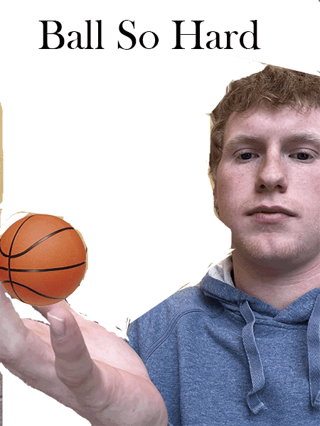

My name is Connor Durkin, I am currently a sophomore at Syracuse University studying Information Management and Technology. I have always had a knack for technology and believe that these types of jobs will be a necessity in the future. I transferred from Hobart and William Smith College last year where I played lacrosse. Outside of school, I work regularly as a delivery driver and love to travel on the weekends to go skiing. I am the middle child with one older sister getting her graduate degree at the Whitman school and a younger sister that is a senior in high school. I am a very laid-back person who likes to make jokes and have fun.
